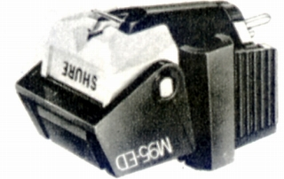
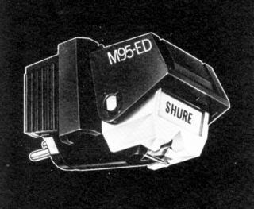

M95ED


■価格 20,600円
■発電方式 MM型
■出力電圧 4.7mV
■針圧 0.75〜1.5g（最適
1g)
■再生周波数帯域 20-20,000Hz
■チャンネルセパレーション 25dB(1kHz)
■チャンネルバランス 2dB
■コンプライアンス
■直流抵抗
1.55kΩ
■負荷容量
■インピーダンス
■針先
■自重 6g
■交換針 N95ED
■発売
1974〜75年
■販売終了 1985年頃
■備考 価格は1975年頃のもの
78回転用交換針
N95-3あり
他に針圧1.5〜3g用の交換針 M95EJ(15,400円)あり
1979年頃には20,500円 N95ED(10,500円)
N95-3(4,000円)
1981年頃には\22,200 N95ED(11,000円)
N95-3(4,300円)
1983年頃には24,500円
1985年頃にはN95ED(11,000円)